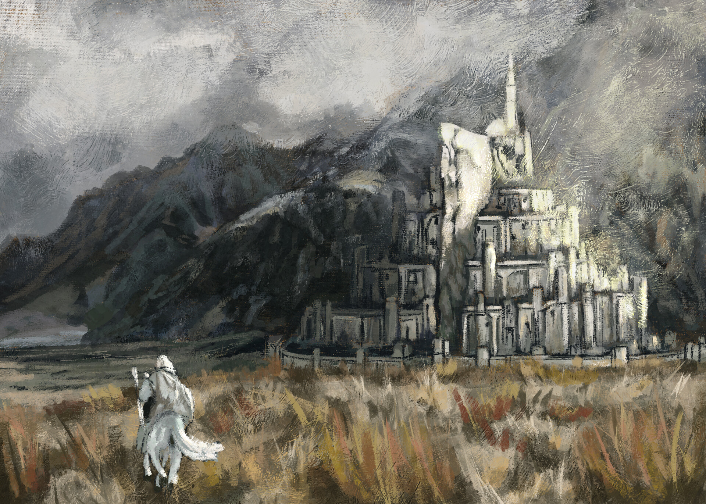

The Lord of the Rings: Minas Tirith
The Lord of the Rings books and movies are definitely my favorite representation of a fantasy universe. I always loved this scene in the movies and I wanted to recreate it digitally. The city of Minas Tirith is the location of the famous last battle scene in the Lord of the Rings series. It is known for its large walls made of pure white stone and the tree of Gondor. In this scene Gandalf the White rides upon shadowfax towards the Gondorian capital.